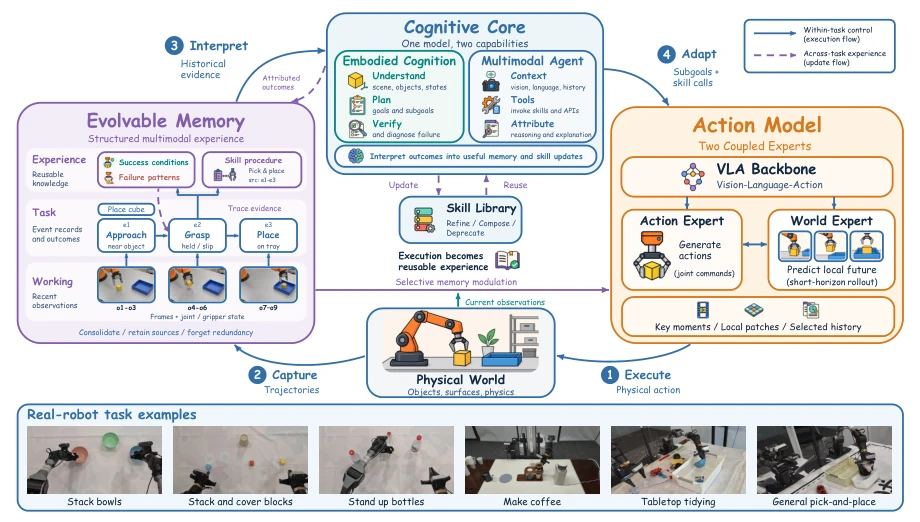
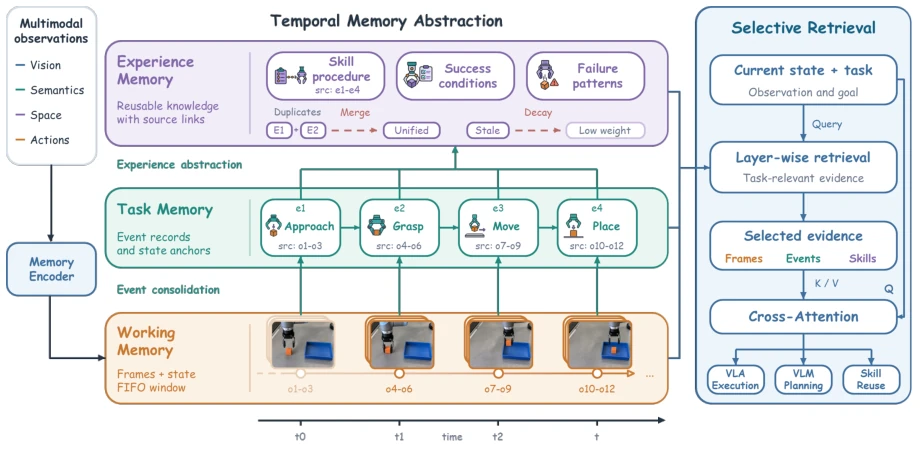
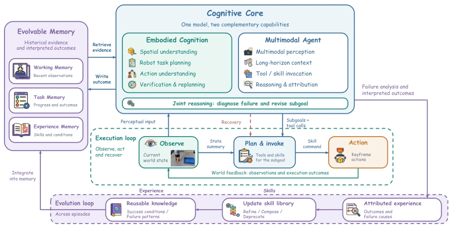
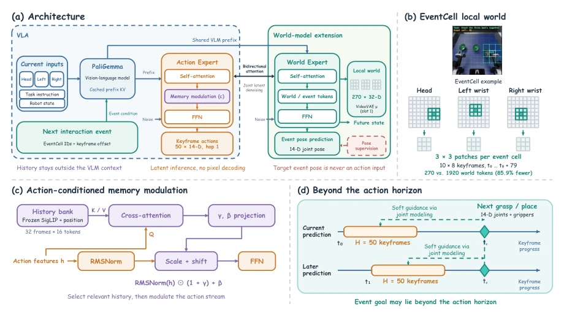

ME-Brain 1.0 attempts to break the "train-and-freeze" curse of embodied intelligence, establishing a closed loop of "evolving while working". This idea is very compelling, after all, who wouldn't want robots to become more adept with age like humans? Its core selling point lies in decoupling and reorganizing memory, cognition, and action, attempting to achieve continuous learning without retraining the model. However, while this "self-evolution" sounds promising, in actual deployment, ensuring that "evolution" does not lead to catastrophic forgetting or logical collapse remains a huge black box. Although it achieved decent scores on benchmarks such as RoboMME, facing the long-tail distribution of the real world, whether this mechanism relying on "experience accumulation" is truly more robust than direct large-scale data pre-training remains to be observed. Furthermore, the real-time performance of its complex hierarchical memory and event-driven mechanisms on edge devices is likely another pain point that warrants sharp criticism.
Current embodied intelligence systems mostly rely on pre-trained large models; once deployed, parameters are frozen (Train-and-Freeze), leading to an inability to continuously learn from physical interaction. This paradigm has two fatal flaws: first, a single training process cannot cover all deployment scenarios, making distribution shift (Distribution Shift) difficult to eliminate; second, robots accumulate a large amount of successful and failed experience during long-term operation, but these valuable signals cannot flow back into the model, causing huge waste of learning resources. Existing works such as OpenVLA [2] or π0 [3] have improved perception and control capabilities, but most lack dynamic utilization mechanisms for historical experience. Although some research has begun to explore experience reuse [6, 8, 9], a complete closed loop from experience acquisition, evolution to action guidance has not yet been formed. ME-Brain aims to solve this pain point by constructing a self-driven loop of "Action Execution → Experience Acquisition → Experience Evolution → Action Execution", enabling robots to possess continuous evolution capabilities without retraining the model.
ME-Brain adopts a "Memory-Cognition-Action" trinity architecture, forming a self-evolving closed loop. First is Evolvable Memory (Evolvable Memory), which constructs an external memory graph independent of the model's context window, encoding multi-modal trajectories into short, medium, and long three-level hierarchical structures. Short-term memory records dense states, medium-term memory aggregates key events, long-term memory abstracts success/failure patterns, achieving experience persistence and cross-task reuse through a "Record-Consolidate-Abstract" mechanism. Second is Cognitive Core (Cognitive Core), as the system hub, it fuses embodied cognition (scene understanding, long-horizon planning, execution diagnosis) with multi-modal agent capabilities (skill invocation, reasoning attribution). It is responsible for retrieving evidence from memory, attributing execution results and converting them into reusable skill libraries, driving the transformation of experience into capabilities. Finally is Action Model (Action Model), proposing the Focus-VLWA architecture, centered on interaction events. It utilizes keyframes (Keyframes) to compress redundant states, focuses on local future prediction of interaction areas through EventCell, and adopts an action-conditioned memory modulation mechanism, retrieving only key historical evidence to guide action generation, avoiding infinite expansion of the context window. The three work in synergy, achieving an automated closed loop from physical interaction to capability iteration.

Figure 1. Experience-driven self-evolution framework of ME-Brain. Cognitive Core integrates embodied cognition with multimodal agent capabilities to plan subgoals, invoke skills, and interpret execution outcomes using current observations and historical evidence. Evolvable Memory consolidates observations and states into task events and reusable experience. Action Model executes the resulting subgoals through the coordination of the Action Expert and WM Expert. Together, the three modules connect within-task execution with cross-task experience evolution.

Figure 2. Multimodal hierarchical memory and selective access. Multimodal observations are encoded by a memory encoder and written to working memory, consolidated into task memory through event aggregation, and further abstracted into skill procedures, success conditions, and failure patterns. Provenance links preserve associations with supporting evidence across memory levels, while first-in, first-out (FIFO) eviction, duplicate merging, and downweighting of stale information support memory maintenance. The current state and task guide hierarchical retrieval, and the selected evidence is incorporated through cross-attention to support action execution, task planning, and experience reuse.

Figure 3. Execution and evolution loop of Cognitive Core. The unified cognitive model combines embodied cognition with multimodal agent capabilities to interpret the current state using historical evidence, plan subgoals, and invoke skills, while Action model executes the resulting actions. Observation feedback supports verification, failure diagnosis, and replanning. Causally attributed outcomes support skill updates and experience abstraction and are written back to memory for future reuse.

Figure 4. Focus-VLWA architecture and key mechanisms. (a) A VLA and a world-model expert share a vision-language prefix and exchange information through bidirectional attention for joint latent-space denoising. (b) EventCell restricts future-world prediction to multi-view interaction neighborhoods. (c) Action features query an external history bank and modulate normalized action representations without extending the backbone context. (d) Fixed-length action windows advance with replanning, while the next event target may lie beyond the current horizon and provide guidance through joint modeling. Ground-truth event poses are supervision targets, not action inputs.
The paper conducted extensive evaluation on multiple benchmarks. On embodied and agent benchmarks, Cognitive Core exceeded the strongest baselines by 8.2 and 9.6 points respectively. On RoboMME, Action Model achieved an average success rate of 47.88%, surpassing the strongest baseline by 3.26 points. On RoboDojo, its average score was 21.51, success rate 16.03%, surpassing π0.5 by 10.10 and 9.12 points respectively. In the real-world evaluation of ME-RealBench containing six tasks, ME-Brain achieved an average score of 69.5 and success rate of 66.7%, significantly outperforming DM0.5 (exceeding by 12.8 and 11.7 points respectively). Ablation experiments and qualitative analysis indicate that the hierarchical memory mechanism effectively improved the success rate of long-horizon tasks, while the event-driven action model significantly reduced computational redundancy and improved decision precision at critical interaction moments.